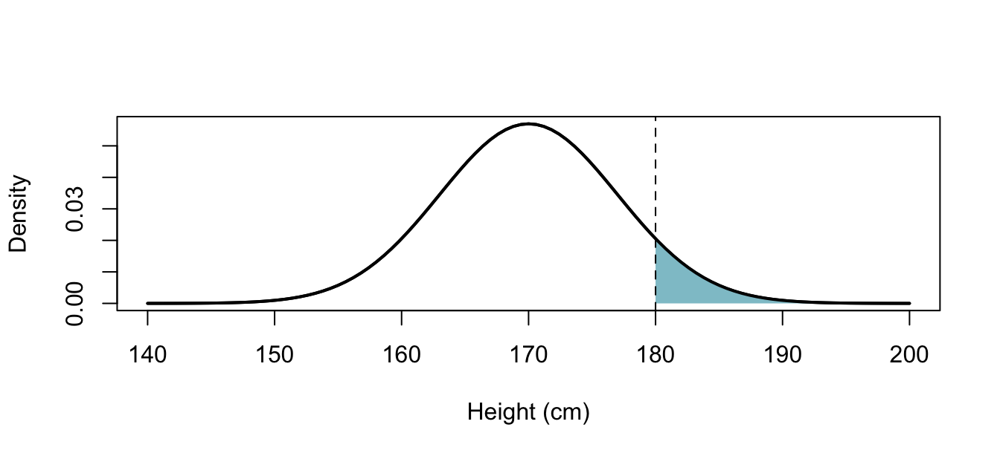
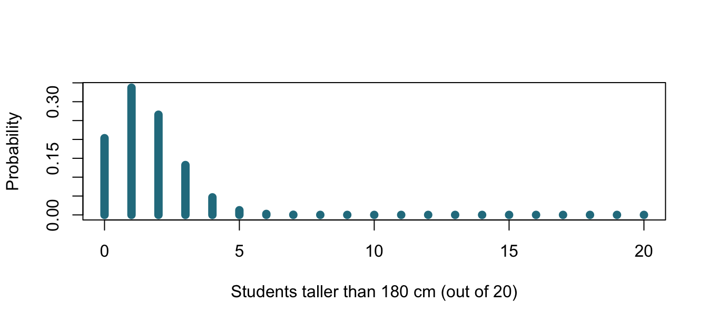
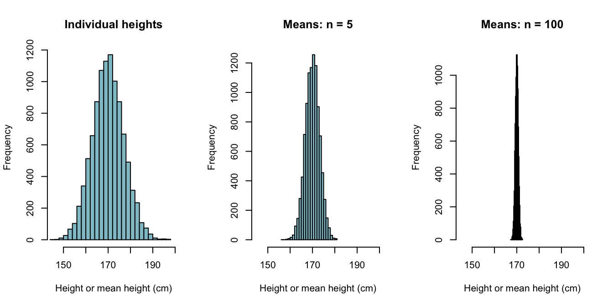

2 Describing outcomes with probability models
Statistical Methods for Life Sciences
2.1 What is a probability model?
Formally, a probability model consists of a sample space \(S\), a collection of events \(\mathcal{F}\), and a probability measure \(P\) that assigns probabilities to those events.
In simple terms, it describes what can happen and how likely it is.
A random variable \(X\) assigns a numerical value to each outcome. Its probability distribution describes how probability is distributed across those values.
For height, it answers: which heights are common, and which are unusual?
We often use mathematical models, such as the normal or binomial distribution. Choosing a model means checking its assumptions and specifying its parameters.
2.2 A normal model for individual heights
Suppose height in a hypothetical student population is approximately normally distributed, with mean 170 cm and SD 7 cm:
\[ X \sim N(\mu,\sigma^2), \qquad \mu=170,\quad \sigma=7. \]
The normal distribution is symmetric and bell-shaped. Its parameters are the mean \(\mu\) and variance \(\sigma^2\).
- Expected value: \(E[X]=\mu\), the long-run average.
- Variance: the expected squared distance from the mean.
- Standard deviation (SD): the square root of variance, expressed in the original units—here, centimetres.
\[ E[X]=170\text{ cm}, \]
\[ \operatorname{Var}(X) =E[(X-\mu)^2] =\sigma^2 =7^2 =49\text{ cm}^2, \]
\[ \operatorname{SD}(X) =\sqrt{\operatorname{Var}(X)} =7\text{ cm}. \]
Normality is a modelling assumption, not a universal property of biological measurements.
2.3 Continuous outcomes: probability is area
A continuous distribution is described by a probability density function, \(f(x)\). For the normal distribution:
\[ f(x)= \frac{1}{\sigma\sqrt{2\pi}} \exp\left[-\frac{(x-\mu)^2}{2\sigma^2}\right]. \]
For our height model:
\[ f(x)= \frac{1}{7\sqrt{2\pi}} \exp\left[-\frac{(x-170)^2}{98}\right]. \]
This function gives the height of the density curve. Probabilities are areas under that curve:
\[ P(a<X\leq b)=\int_a^b f(x)\,dx. \]
The integral adds up the density across an interval. The total area is 1:
\[ \int_{-\infty}^{\infty}f(x)\,dx=1. \]
Predict: What proportion of students would be taller than 180 cm under this model?
2.3.1 Calculating the area
The cumulative distribution function, \(F(x)\), gives the probability of a value at or below \(x\):
\[ F(x)=P(X\leq x)=\int_{-\infty}^{x}f(t)\,dt. \]
In simple terms, it gives the accumulated area to the left of a cutoff.
For 180 cm:
\[ F(180)=P(X\leq180)\approx0.9234. \]
In R, pnorm() calculates this area:
Code
pnorm(180, mean = 170, sd = 7)[1] 0.9234363Using the complement rule, the area to the right is:
\[ \begin{aligned} P(X>180) &=\int_{180}^{\infty}f(x)\,dx\\ &=1-F(180)\\ &\approx1-0.9234\\ &=0.0766. \end{aligned} \]
We can calculate it directly in R:
Code
pnorm(180, mean = 170, sd = 7, lower.tail = FALSE)[1] 0.07656373Under this model, about 7.7% of students exceed 180 cm, close to the 8% in our earlier hypothetical example.
Probability is an area, not the height of the density curve.
In R, dnorm() gives the density curve’s height; pnorm() gives the accumulated area.
For a continuous model, any single exact value has probability zero:
\[ P(X=180)=\int_{180}^{180}f(x)\,dx=0. \]
A recorded height of “180 cm” represents an interval determined by the measurement precision.
2.4 Standardisation: how far from the mean?
A z-score expresses distance from the mean in SD units:
\[ Z=\frac{X-\mu}{\sigma}. \]
For a height of 180 cm:
\[ z=\frac{180-170}{7}\approx1.43. \]
This height is about 1.43 SD above the mean.
Under our normal model, \(Z\sim N(0,1)\). Writing \(\Phi\) for the standard normal cumulative distribution function:
\[ \begin{aligned} P(X>180) &=P\left(Z>\frac{180-170}{7}\right)\\ &=1-\Phi\left(\frac{10}{7}\right)\\ &\approx0.0766. \end{aligned} \]
We get the same area using the standard normal distribution:
Code
z <- (180 - 170) / 7
pnorm(z, lower.tail = FALSE)[1] 0.07656373Standardisation lets us use the same standard normal distribution for normal models with different means and SDs.
2.5 Percentiles: finding a cutoff
We can also reverse the question:
Below which height do 95% of students fall?
The 95th percentile, \(x_{0.95}\), satisfies:
\[ P(X\leq x_{0.95})=0.95. \]
For a normal distribution, we calculate it using the corresponding standard normal percentile:
\[ \begin{aligned} x_{0.95} &=\mu+\sigma\Phi^{-1}(0.95)\\ &\approx170+7(1.645)\\ &\approx181.5\text{ cm}. \end{aligned} \]
Here, \(\Phi^{-1}(0.95)\) is the z-score with 95% of the area below it.
In R, qnorm() finds the cutoff for a given accumulated probability:
Code
qnorm(0.95, mean = 170, sd = 7)[1] 181.514This leaves 5% above the cutoff.
By comparison, the central 95% leaves 2.5% in each tail:
\[ P(-1.96\leq Z\leq1.96)\approx0.95. \]
Converting back to heights:
\[ \begin{aligned} [\mu-1.96\sigma,\;\mu+1.96\sigma] &=[170-1.96(7),\;170+1.96(7)]\\ &\approx[156.3,\;183.7]\text{ cm}. \end{aligned} \]
Code
qnorm(c(0.025, 0.975), mean = 170, sd = 7)[1] 156.2803 183.7197This interval describes individual heights under the model. It is not a confidence interval for the population mean.
2.6 Discrete outcomes: from heights to counts
Height is continuous, but we can define a binary outcome:
\[ Y= \begin{cases} 1, & \text{if the student is taller than 180 cm},\\ 0, & \text{otherwise}. \end{cases} \]
Then \(Y\) has a Bernoulli distribution with probability \(p=P(X>180)\approx0.0766\):
\[ P(Y=1)=p,\qquad P(Y=0)=1-p. \]
Now let \(K\) count how many students exceed 180 cm among 20 independently sampled students:
\[ K=\sum_{i=1}^{20}Y_i. \]
If each has the same probability \(p\):
\[ K\sim\operatorname{Binomial}(n=20,p). \]
The expected count is:
\[ E[K]=np\approx20(0.0766)\approx1.53. \]
This is an average over repeated samples; an observed count must be an integer.

2.6.1 Calculating count probabilities
For discrete outcomes, each bar’s height is a probability. The binomial formula is:
\[ P(K=k)=\binom{n}{k}p^k(1-p)^{n-k}, \qquad k=0,1,\ldots,n. \]
The coefficient \(\binom{n}{k}\) counts the ways to choose which \(k\) students exceed the cutoff:
\[ \binom{n}{k}=\frac{n!}{k!(n-k)!}. \]
For exactly five:
\[ P(K=5)=\binom{20}{5}p^5(1-p)^{15}. \]
Code
dbinom(5, size = 20, prob = p_tall)[1] 0.01234989For five or more, add the probabilities of counts from 5 to 20, or use the complement:
\[ \begin{aligned} P(K\geq5) &=\sum_{k=5}^{20}\binom{20}{k}p^k(1-p)^{20-k}\\ &=1-P(K\leq4). \end{aligned} \]
Code
pbinom(4, size = 20, prob = p_tall, lower.tail = FALSE)[1] 0.01539839The binomial model assumes a fixed number of trials, independent outcomes and a common probability.
2.7 Other distributions in life sciences
Different processes may need different models:
- Poisson: event counts within a fixed exposure, such as colonies in a plated volume when its assumptions hold. The mean and variance are equal.
- Negative binomial: counts with more variability than Poisson allows, such as RNA-seq counts across biological replicates.
- Log-normal: positive measurements whose logarithms are normally distributed, such as some concentrations.
- Hypergeometric: counts of items in a category when sampling without replacement from a finite set, such as genes belonging to a pathway.
Data type guides the choice, but biological context and model assumptions also matter.
ImportantKey message
A probability model describes what can happen and how likely it is.
Continuous models use areas under density curves; discrete models assign probabilities to individual values.
We choose models whose assumptions reasonably describe our data and study design.
Next: what happens when we repeatedly sample students and calculate their mean height?
3 Repeat the sampling
3.1 Population parameters and sample statistics
A parameter, such as \(\mu\), describes the population.
A statistic, such as \(\bar{x}\), is calculated from a sample.
Before sampling, the sample mean is a random variable:
\[ \bar{X}=\frac{1}{n}\sum_{i=1}^{n}X_i. \]
After sampling, we observe its value, \(\bar{x}\).
For observations with common mean \(\mu\):
\[ E[\bar{X}]=\mu. \]
Individual studies need not give the population mean exactly.
3.2 Sampling as an urn model
Imagine an urn containing one labelled ball for each student, with their height written on it.
- Draw a sample and calculate its mean.
- Return the sample and repeat the study.
- Collect the means to obtain a distribution of study results.
With replacement within a sample: return each ball immediately; the same individual can appear again and independent draws are possible.
Without replacement within a sample: each individual can appear only once; the draws are dependent.
When sampling a small fraction of a large population, independence is often a useful approximation.
This also prepares us for bootstrapping: using the observed sample as the urn and sampling from it with replacement.
3.3 A distribution of sample means
Predict: How will the distribution of means differ from the distribution of individual heights?
Code
individuals <- rnorm(10000, mu, sigma)
means5 <- replicate(10000, mean(rnorm(5, mu, sigma)))
means100 <- replicate(10000, mean(rnorm(100, mu, sigma)))
par(mfrow=c(1, 3))
for (name in c("Individual heights",
"Means: n = 5",
"Means: n = 100")) {
values <- switch(
name,
"Individual heights"=individuals,
"Means: n = 5"=means5,
"Means: n = 100"=means100
)
hist(values, breaks=30, xlim=c(145, 200),
main=name,
xlab="Height or mean height (cm)",
col="#8FC4CF", ylab="Frequency")
}
The sampling distribution describes a statistic across repeated samples.
A proportion or a difference between two sample means also has a sampling distribution.
Simulation follows the same pattern each time:
Sample → calculate a statistic → repeat → inspect the distribution.
3.4 Central limit theorem
With independent normal observations, the sample mean is normally distributed at any sample size.
More generally, for independent, identically distributed observations with finite variance, the standardised sample mean approaches a normal distribution as sample size increases.
This does not make individual observations normal.
How large a sample is needed depends on the population distribution.
ImportantKey message
A sample mean has its own distribution. To understand variation between studies, examine study statistics rather than only individual measurements.
4 Describe precision and prepare for inference
4.1 Standard deviation versus standard error
SD describes variation among individuals.
SE is the SD of a statistic’s sampling distribution.
For the mean of independent observations with common variance:
\[ \operatorname{SE}(\bar{X})=\frac{\sigma}{\sqrt{n}}. \]
In our model, individual SD stays at 7 cm.
SE decreases from about 3.13 cm for \(n=5\) to 0.70 cm for \(n=100\).
If population SD is unknown, estimate SE using sample SD \(s\):
\[ \widehat{\operatorname{SE}}(\bar{X})=\frac{s}{\sqrt{n}}. \]
More independent individuals improve precision, but do not remove biological variability or correct selection bias.
Discuss: Is measuring five students twenty times equivalent to measuring 100 different students?
4.2 How unusual is a mean of 175 cm?
Assume a normal population with mean \(\mu_0=172\) and known SD 7 cm.
For 100 independent students, SE is 0.70 cm.
\[ Z=\frac{\bar{X}-\mu_0}{\sigma/\sqrt{n}}, \qquad z=\frac{175-172}{0.70}\approx4.29. \]
An individual height of 175 cm is common, but a mean this high for 100 students is unusual under this model.
The upper-tail probability for the sample mean is approximately 0.0000091.
This is a probability of a result given an assumed model, not the probability that the model is true.
4.3 Return to the two research groups
The opening compared two estimated means, not one estimate with a known population mean.
Both estimates have sampling variability.
For independent groups, the variance of their difference is the sum of the variances of their means:
\[ \operatorname{SE}(\bar{X}_1-\bar{X}_2) = \sqrt{\frac{\sigma_1^2}{n_1}+\frac{\sigma_2^2}{n_2}}. \]
If both groups sample from our population with SD 7 cm, this SE is:
- About 4.43 cm with five students per group.
- About 0.99 cm with 100 students per group.
The same observed 3 cm difference therefore has a different interpretation.
ImportantKey message
Judge an observed statistic against its sampling distribution. Its precision depends on sample size, variability and study design.
This is the foundation for the next session on statistical inference.
4.4 What comes next?
Your colleague will introduce:
- Hypotheses and p-values.
- Confidence intervals.
- Bootstrap and permutation methods.
- Relevant test distributions such as \(t\), \(\chi^2\) and \(F\).
Exit question: What is the difference between an unusually tall student and an unusually high sample mean? Which distribution do you need for each?